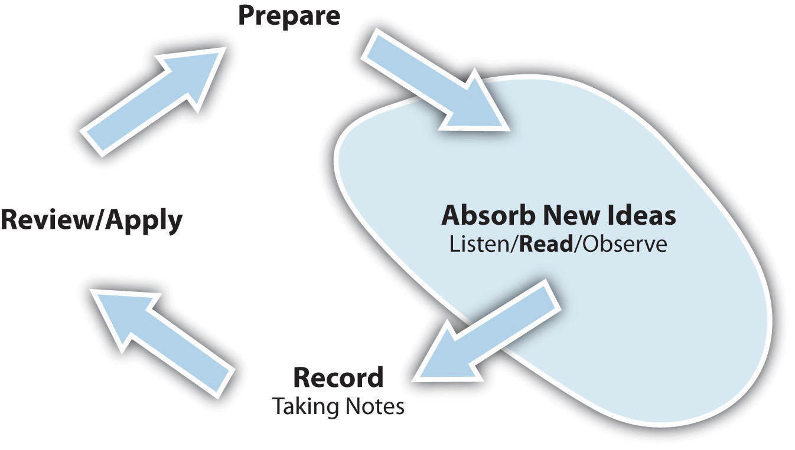

Assess your present knowledge and attitudes.
| Unsure | No | Yes | |
|---|---|---|---|
| 1. I am a good reader and like to read for pleasure. | |||
| 2. I feel overwhelmed by the amount of reading I have to do for classes. | |||
| 3. I usually understand what is written in textbooks. | |||
| 4. I get frustrated by difficult books. | |||
| 5. I find it easy to stay focused on my reading. | |||
| 6. I am easily bored reading for classes. | |||
| 7. I take useful notes when I read. | |||
| 8. I can successfully study for a test from the notes I have taken. | |||
| 9. I use a dictionary when needed while reading. | |||
| 10. I have trouble reading long passages on the computer screen. |
Think about how you answered the questions above. Be honest with yourself. On a scale of 1 to 10, how would you rate your level of academic reading at this time?
| Poor reader | Excellent reader | |||||||||||||||||
|---|---|---|---|---|---|---|---|---|---|---|---|---|---|---|---|---|---|---|
| 1 | 2 | 3 | 4 | 5 | 6 | 7 | 8 | 9 | 10 | |||||||||
In the following list, circle the three most important areas in which you think you can improve:
Are there other ways in which you can improve your reading? Write down other things you feel you need to work on.
__________________________________________________________________
__________________________________________________________________
__________________________________________________________________
__________________________________________________________________
Here’s what we’ll work on in this chapter:
Sure you can read. After all, that’s what you are doing now, at this moment. But reading to learn is active reading, a process that involves much more than the mechanics of converting a set of letters into meaningful words. It is a process that you will use for gathering much of the new information you get in school—and in life.
Does the following sound familiar? You’ve had a full day of classes, so you go to the gym to get in a workout. Afterward, you meet a friend who suggests going out for a quick bite; you get back to your room around eight o’clock and settle in to work on your reading assignment, a chapter from your sociology text entitled “Stratification and Social Mobility.” You jump right in to the first paragraph, but the second paragraph seems a bit tougher. Suddenly you wake up and shake your head and see your clock says 11:15 p.m. Oh no! Three hours down the drain napping, and your book is still staring back at you at the beginning of the chapter, and you have a crick in your neck.
Now, picture this: You schedule yourself for a series of shorter reading periods at the library between classes and during the afternoon. You spend a few minutes preparing for what you are going to read, and you get to work with pen and paper in hand. After your scheduled reading periods, by 5:30 p.m. you have completed the assignment, making a note that you are interested in comparing the social mobility in India with that in the United States. You reward yourself with a workout and dinner with a friend. At 8 p.m., you return to your room and review your notes, feeling confident that you are ready for the next class.
The difference between these two scenarios is active readingA conscious process in which the reader chooses to create an interaction with the written word, with the objective of increasing understanding.. Active reading is a planned, deliberate set of strategies to engage with text-based materials with the purpose of increasing your understanding. This is a key skill you need to master for college. Along with listening, it is the primary method for absorbing new ideas and information in college. But active reading also applies to and facilitates the other steps of the learning cycle; it is critical for preparing, capturing, and reviewing, too.
Figure 5.2 The Role of Reading in the Learning Cycle
In this chapter, you will learn the basics of active reading. Follow all the recommended steps, even though at first you may think they take too long. In the end, you will be able to cut your reading time while increasing what you learn from reading. Read on!